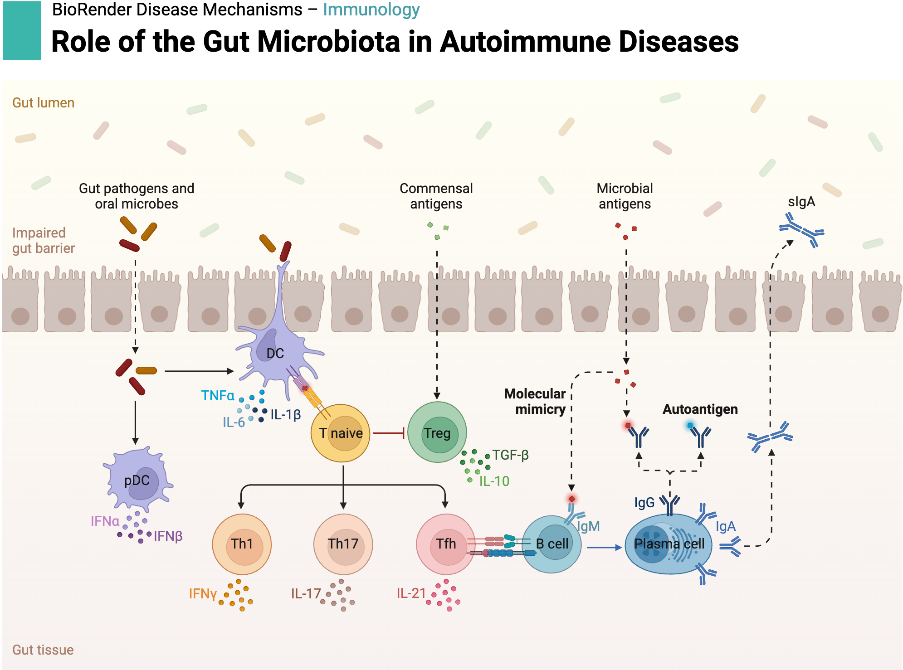

Step 2. Scan peptides from gut microbial proteomes¶
Autoimmune diseases occur when the immune system erroneously targets the body’s own tissues. While genetic predisposition provides a crucial foundation, mounting evidence highlights the role of environmental factors — particularly microbial exposure — in the initiation and progression of autoimmunity. Among the proposed mechanisms, molecular mimicry is one of the most well-characterized.
In this process, microbial peptides exhibit sequence or structural similarity to self-peptides. As a result, T cells initially activated against the pathogen may cross-react with self-antigens, leading to unintended autoimmune responses.
Example: Certain gut bacterial peptides closely resemble self-peptides presented by HLA-B*27, a major genetic risk allele in ankylosing spondylitis (AS). T cells primed by these microbial peptides may subsequently recognize and attack host tissues, triggering chronic inflammation.
{kind=link}
Scan all possible 9-mer peptides from microbial proteomes¶
We collected 16 bacterial strains that are known to be associated with AS. The proteomes of these strains were downloaded from the NCBI database. We will scan all possible 9-mer peptides from these proteomes and check if they match any of the self-peptides presented by HLA-B*27.
All 16 bacterial proteomes can be downloaded Here
from Bio import SeqIO
import gzip
import pandas as pd
name = 'RJX1596' # for example, change to the desired protein database name
file_path = 'Data/{}.faa.gz'.format(name)
all_seqs = []
protein_seqs = []
peptide_dict = {}
with gzip.open(file_path, "rt") as handle:
for record in SeqIO.parse(handle, "fasta"):
protein_id = record.description
sequence = str(record.seq)
all_seqs.append(sequence)
protein_seqs.append(protein_id)
print(f"Total proteins: {len(all_seqs)}")
def scan_strings(input_list, protein_seqs, length=9):
all_peptides = []
for item, protein in zip(input_list, protein_seqs):
for i in range(0, len(item) - length+1, 1):
new_str = item[i:i+length]
peptide_seq = new_str
all_peptides.append(protein)
if peptide_seq not in peptide_dict:
peptide_dict[peptide_seq] = [protein]
else:
peptide_dict[peptide_seq].append(protein)
scan_strings(all_seqs, protein_seqs, length=9)
print(f"Total peptides: {len(peptide_dict)}")
Total proteins: 5562
Total peptides: 1658189
Save 9mers to a .pep file¶
peptide_df = pd.DataFrame(peptide_dict.keys(), columns=['Peptide'])
peptide_df.to_csv('{}.pep'.format(name), index=False, header=False)
NetMHCpan4.1¶
We use NetMHCpan4.1 to predict the binding affinity of the peptides to HLA-B27. NetMHCpan is a widely used tool for predicting peptide-MHC binding, and it has been shown to be effective for a variety of MHC alleles, including HLA-B27.
Download the Linux Version 4.1b Here
Follow the instructions in the netMHCpan-4.1.readme file to install NetMHCpan4.1.
Run NetMHCpan to predict HLA affinity
In the ‘netMHCpan-4.1/test’ directory test the software:
Predict HLA-27:05 affinity by running the following command:
../netMHCpan -p RJX1596.pep -BA -xls -a HLA-B2705 -xlsfile RJX1596.xls
NetMHCpan-4.1 will output a file named RJX1596.xls containing the predicted binding affinities of the peptides to HLA-B*27:05.
Select peptides with EL_Rank<5 and BA_Rank<5 (Ranking top 5% of the peptides)¶
Download the output files for 16 bacterial strains Here
df = pd.read_csv('themap_AS/netMHCpan-4.1/test/{}.xls'.format(name), sep='\t', header=1)
df = df[df['NB']==1]
df = df[df['EL_Rank']<5]
df = df[df['BA_Rank']<5]
df.reset_index(drop=True, inplace=True)
all_peptides = df['Peptide'].values.tolist()
print(f"Total peptides with high affinity with HLA-27:05: {len(all_peptides)}")
df['Protein_ID'] = df['Peptide'].apply(lambda x: peptide_dict[x] if x in peptide_dict else x)
print(df.info())
Total peptides with high affinity with HLA-27:05: 49123
<class 'pandas.core.frame.DataFrame'>
RangeIndex: 49123 entries, 0 to 49122
Data columns (total 12 columns):
# Column Non-Null Count Dtype
--- ------ -------------- -----
0 Pos 49123 non-null int64
1 Peptide 49123 non-null object
2 ID 49123 non-null object
3 core 49123 non-null object
4 icore 49123 non-null object
5 EL-score 49123 non-null float64
6 EL_Rank 49123 non-null float64
7 BA-score 49123 non-null float64
8 BA_Rank 49123 non-null float64
9 Ave 49123 non-null float64
10 NB 49123 non-null int64
11 Protein_ID 49123 non-null object
dtypes: float64(5), int64(2), object(5)
memory usage: 4.5+ MB
None